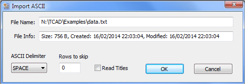
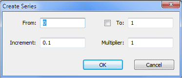

|
||||||
To create a datasheet you can either: (i) import a data from an ASCII file. Click the ‘Open’ button (in the main toolbar) and select the file to be imported. The Import ASCII dialog appears, giving you the possibility to select the delimiter (TAB, SPACE or ;), to set the number of rows to skip at the beginning of the file, to set the number of rows to read from the file. When ready, press ‘OK’ to import the file content into a new datasheet. A posted note is associated to the datasheet. To view and modify it, select ‘View/Note’.  (ii) create a blank document by clicking the ‘New’ button (or click ‘File/New’ menu). A new datasheet, with two blank columns, will be created To show and set the column properties, right click the column and choose ‘Properties’. The ‘Column Properties’ appears giving you the possibility to: (i) To change the column label. You can select to show column name (A, B, C, and so on), label or both. (ii) To change numeric format of the column data. You can choose between decimal (1000.0) and scientific (1e3). You can also set the format prefix (‘Pre’ = number of digits before the decimal point) and suffix (‘Suf’ = number of digits after the decimal point). (iii) To change the column type: X, Y, X-Err (Error Bars on X) and Y-Err (Error Bars on Y). When ready press ‘Apply’ and then ‘OK’. You can change the active column by using the left-right arrows. 3. Inserting, Appending and Deleting columns To insert a new column after an existing one, right click the latter and choose ‘Insert Column’. A new blank column will be created. You can also append columns (inserting column after the last one) by right clicking on any column and choose ‘Append columns’. To delete a column, right click it and choose ‘Delete columns’. You can fill a column with a series of numbers, by setting the initial (‘From’) value y0, Increment δ and, if needed, a multiplier m. At index i (varying from 0 to n-1 (n = number of rows)), the value yi is given by yi = m * yi-1 + δ. To create a series, right click the column and select ‘Create Series’. The ‘Create Series’ dialog appears, giving you the possibility to set the initial value y0, the increment δ and the multiplier m. If you check the ‘To’ button, the calculation will be stopped when yi reach the final (‘To’) value.  You can set the column values by using any mathematical expression. Right click the column and choose ‘Set Column Values’ With the shown dialog you can set the column values. The columns are alphabetically named: A, B, C, … (the names are not case sensitive). To set the column values, write down the expression and click the ‘Apply’ button. You can use the dialog menu to quickly include functions and constants in your expression. For more details cf. the paragraph on the mathematical console.
To view the column descriptive statistics, right click the column and select ‘Statistics’. The statistics dialog appears with the standard parameters: Minimum, Maximum, Sum, Mean, Median, Variance, Standard Deviation, Variance Coefficient, Root Mean Square (RMS), Skewness and Kurtosis. You can copy statistics to the clipboard by clicking the ‘Copy’ button. You can perform some useful calculations on column (e.g. integrate, differentiate, average, calculate the FFT (Fast Fourier Transform) or the autocorrelation function of a transient signal), by selecting the ‘Analysis’ menu. You can then select, in the ‘Output Column’ list, an existing column to update with the calculation results, or create a new column by checking the ‘New’ button. To add the integral, derivative, averaged or FFT curve to the graph, check the ‘Add to Graph’ button. Note that you can program you own algorithms by using the SigmaGraph scripting capabilities. SigmaGraph use a centered difference formula to approximate the derivative:
For integration, the trapezoidal rule is used. The averaging formula used is the following (where m is the averaging order): For FFT, the module is calculated and normalized by the number of points (this number of points should be a power of two). The frequency is calculated based on the sampling period (X-step in second). The Autocorrelation function is calculated by using the following formula: For equi-spaced measurements y1, y2, ..., yN. You can mask selected cells in a column (or group of columns) by right clicking and selecting ‘Mask’. The masked cell will be printed out in red and the corresponding data will not be plotted or used in fitting. You can invert mask or unmask cells: right click the selected cells and choose ‘Invert Mask’ or ‘Unmask’. You can also use the datasheet toolbar buttons to perform these operations. To sort a column, select it, right click and choose ‘Sort Column’ (ascending or descending). SigmaGraph gives you two ways to import ASCII data into a datasheet: (i) Importing with options. Select the datasheet to import in, and click ‘Import with options’ toolbar button. The importing dialog will appears. Click the browse button (‘…’) and select the ASCII file. The file content and info will be displayed. You can select the delimiter (TAB, SPACE or ;), set the number of rows to skip at the beginning of the file, set the number of rows to read from the file, and select whether or not to read titles into the datasheet. You can select the columns to import by entering their indexes (example: 1;3 means importing the first and the third columns) or leaving the default behavior (* means import all columns). When ready, press ‘OK’ to import the selected columns into datasheet. (ii) Importing directly from file. Select the datasheet to import in, click ‘Import’ toolbar button, and choose the ASCII file to import from. The default importing options are used (ASCII separator, rows to skip…). You can copy/paste cells, rows, column… by selecting the data and clicking the ‘Copy’ toolbar button (or Ctrl+C or right-click and select ‘Copy’). To paste data, select destination cells, rows or column and click the ‘Paste’ toolbar button (or Ctrl+V or right-click and select ‘Paste’).
|
||||||
|